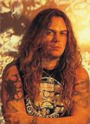
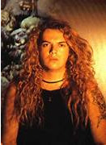
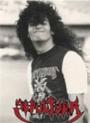

Max Cavalera

Max Cavalera, fundador de Sepultura junto a su hermano Igor, encontró en la música una forma de desahogo tras la muerte de su padre. Estuvo en la banda hasta 1996, grabando los 6 discos más importantes de Sepultura. Dejó el grupo por conflictos internos relacionados con la banda y su esposa que era la mánager de la banda, y luego formó las bandas Soulfly y Cavalera Conspiracy.
Igor Cavalera

Igor Cavalera, cofundador de Sepultura, tocó en la banda desde 1984 hasta 2006. Tras la salida de su hermano Max, ambos dejaron de hablar durante diez años, pero se reunieron después para formar Cavalera Conspiracy. Es considerado uno de los mejores bateristas del metal y sigue destacando por su talento.
Paulo Jr.

Paulo Xisto Pinto Júnior, conocido como Paulo Jr., es el bajista y miembro más veterano de Sepultura, banda a la que se unió en 1984. A lo largo de los años, ha sido un pilar fundamental en la continuidad del grupo, aportando un sonido sólido y una presencia constante tanto en estudio como en directo, en los cuatro primeros discos de sepultura él no tocó el bajo ya que no sabía y en los conciertos le bajaban mucho la voz a él ya que no era muy bueno. Además de su trabajo con Sepultura, ha participado en proyectos como Cultura Tres, consolidándose como una figura respetada del metal brasileño y mundial.
Andreas Kisser

Andreas Kisser, guitarrista brasileño, se unió a Sepultura en 1987 y fue clave en la evolución del sonido de la banda. Participó en discos emblemáticos como Beneath the Remains y Chaos A.D., consolidándose como uno de los guitarristas más influyentes del metal. Tras la salida de Max Cavalera en 1996, Kisser asumió el liderazgo de Sepultura y continuó explorando nuevos estilos dentro del metal.